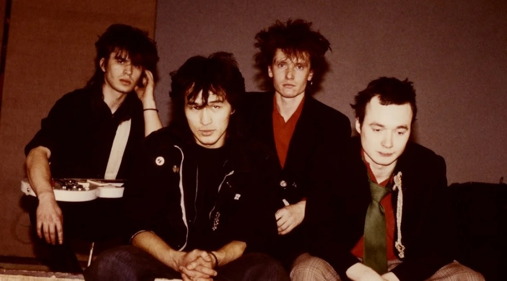

«Кино» образовалось из участников двух ленинградских бит-групп «Палата № 6» и «Пилигрим»
в первой на басу играл Виктор Цой, во второй состояли гитарист Алексей Рыбин и барабанщик Олег Валинский.
Кроме того, Цой несколько раз выступал на концертах «Автоматических удовлетворителей», а Рыбин некоторое время репетировал с «Абзацем».
Летом 1981 года трое друзей «дикарями» поехали отдыхать в Крым, где пришли к решению о создании общей группы под названием «Гарин и гиперболоиды»
по аналогии с фантастическим романом Алексея Толстого «Гиперболоид инженера Гарина»).
Вернувшись в Ленинград, они приступили к репетициям накопленного Цоем материала, однако Валинский почти сразу же был призван в армию и в связи с этим покинул коллектив.
Осенью 1981 года музыканты вступили в Ленинградский рок-клуб и ближе познакомились с влиятельным представителем рок-андерграунда Борисом Гребенщиковым, которому настолько понравилось творчество молодой группы, что он предложил им совместно поработать на студии.
В начале 1982 года название коллектива сменилось на «Кино».

Состав группы "КИНО" на момент 1988г.
Смысл названия заключался в нём самом — оно краткое, ёмкое, а также «синтетическое», то есть искусственное. Когда придумывали название, главными условиями были наличие не более двух слогов, распространённость и лёгкое произношение.
Эти условия появились из-за того, что первое название «Гарин и гиперболоиды» было слишком длинным. Слово «кино», помимо краткости, понравилось Виктору Цою своей искусственностью, сродни песне «Алюминиевые огурцы», написанной в 1981 году под впечатлением от сельскохозяйственных работ,
на которые музыканта отправили во время обучения в училище. В песне есть такие «искусственные» слова, как «кнопки», «скрепки», «клёпки», «дырки», «булки», «вилки» и т. п.. Цой и Рыбин обсуждали название на квартире у Геннадия Зайцева вместе с Борисом Гребенщиковым и другими участниками группы «Аквариум».
Шла подготовка к записи первого альбома, и требовалось простое название из одного слова, которое можно было бы поместить на обложку. Присутствовавшие на собрании музыканты перебрали множество вариантов, но к окончательному решению так и не пришли.
И уже на обратном пути домой, направляясь к станции метро «Технологический институт», друзья обратили внимание на светящуюся вывеску кинотеатра «Космонавт». Слово «кино» показалось им вполне подходящим, хотя и было отбраковано среди прочих ещё полчаса назад.
Музыканты уже устали мучиться проблемой выбора и остановились на этом варианте.
Дебютный альбом записывался в Доме пионеров Красногвардейского района, впоследствии студии «АнТроп», собранной Андреем Тропилло
из списанного оборудования различных организаций. На одном из квартирников Тропилло уже имел возможность наблюдать Цоя и Рыбина,
поэтому сразу же после сведения аквариумовского «Треугольника», следуя рекомендации Гребенщикова, пригласил к себе музыкантов и приступил к работе
над записью имевшегося у них материала. Так как группа «Кино» на тот момент состояла всего из двух человек, Гребенщиков попросил помочь
своих коллег по «Аквариуму»: Всеволода Гаккеля (виолончель), Андрея Романова (флейта) и Михаила Файнштейна-Васильева (бас-гитара)
В связи с отсутствием барабанщика было решено использовать драм-машину, советский ритм-бокс «Электроника».
Получившийся магнитоальбом содержал 13 песен, а назван был по запланированной общей продолжительности в минутах — «45».
В среде музыкальных критиков альбом остался почти незамеченным, но поспособствовал популярности группы, в том числе за пределами Ленинграда.
Цой впоследствии отмечал, что запись вышла довольно-таки сырой, и выпускать её не следовало.
Закрепление на сцене
В начале 1984 года Цой и Каспарян приступили к записи настоящего второго альбома; роль продюсера снова исполнил Гребенщиков, позвав на запись
многих своих знакомых: Александра Титова (бас-гитара), Сергея Курёхина (клавиши), Петра Трощенкова (ударные), Всеволода Гаккеля (виолончель),
Игоря Бутмана (саксофон) и Андрея Радченко (барабаны). Сам Гребенщиков подыгрывал на небольшом клавишном инструменте «Кассиотон».
Запись была произведена на студии Андрея Тропилло и выпущена под названием «Начальник Камчатки» («Камчаткой» именовалась котельная, в которой Цой позже работал кочегаром).
На обложке в числе прочих музыкантов изображён Георгий «Густав» Гурьянов, хотя он влился в состав лишь в самом конце рабочего процесса и поучаствовал только в одной песне.
Определяющим стилем на альбоме стал минимализм, проявившийся и в лаконизме аранжировок, и в техническом оснащении, когда, к примеру, обработка звука гитары
Каспаряна осуществлялась не через овердрайв, а при помощи советского магнитофона «Нота», выполнявшего в тот момент функции фузз-эффекта.
Подпольная рок-пресса, отметив на альбоме с полдесятка беспроигрышных хитов («Троллейбус», «Последний герой», «Генерал», «Камчатка», «Транквилизатор»),
всё-таки съязвила на тему «атмосферы какого-то занудства». «Альбом был электрическим и несколько экспериментальным в области звука и формы.
Не могу сказать, что по звуку и стилевой направленности он получился таким, каким бы мы его хотели видеть, но, с точки зрения эксперимента, это выглядело интересно», — отмечал в интервью лидер коллектива.
По окончании работы над альбомом Цой сформировал «электрический» состав «Кино», в который, кроме него, вошли Каспарян (соло-гитара), Титов (бас-гитара), Гурьянов (ударные), и с мая 1984 года начал активно репетировать новую концертную программу.
Тогда же музыканты выступили на II фестивале Ленинградского рок-клуба, где произвели настоящую сенсацию, став его лауреатами и самым ярким открытием: в частности, лучшей песней мероприятия
была признана их «Безъядерная зона». С тех пор группа получила некоторую известность и стала регулярно гастролировать по другим городам Советского Союза. Летом состоялось совместное
выступление с «Аквариумом», «Звуками Му» и «Браво», проходившее в подмосковном посёлке Николина Гора под пристальным наблюдением сил госбезопасности и также отмеченное критиками как успешное
В начале 1985 года коллектив предпринял попытку записи ещё одного альбома, но Цою не понравилось излишнее вмешательство Тропилло, который постоянно пытался влиять на творчество, поэтому тот
В.Цой настраивает акустическую гитару
проект оставили незаконченным, а запись произвели дома у Алексея Вишни с тремя гитарами и ритм-компьютером. Как отмечал журналист Андрей Бурлака, аудиокассета под названием «Это не любовь» получилась самым позитивным альбомом за всю историю «Кино».
Александр Титов, одновременно с участием в деятельности группы, был членом «Аквариума», и с каждым днём ему становилось всё труднее совмещать работу в двух группах, поэтому в ноябре
1985 года он принял решение покинуть «Кино» в пользу ансамбля Бориса Гребенщикова. На его место взяли джазового гитариста Игоря Тихомирова (экс-«Джунгли»).
Таким образом, сформировался классический состав группы, просуществовавший до самого её конца
Юрий Каспарян и Виктор Цой на концерте в Ленинграде, 1986 год.В январе 1986 года Андрей Тропилло всё-таки выпустил запись, произведённую у него на студии несколькими месяцами ранее.
Альбом под названием «Ночь» стал первым официальным релизом «Кино», изданным московской фирмой «Мелодия». Пластинка, по некоторым данным, разошлась двухмиллионным тиражом, сделав группу
знаменитой далеко за пределами рок-сообщества. Тем не менее, сами музыканты крайне негативно восприняли выпуск этого альбома, с продаж которого не получили ни копейки; нелестно отозвалась
об альбоме и подпольная рок-пресса. Летом музыканты съездили в Киев на съёмки фильма Сергея Лысенко «Конец каникул», в котором прозвучало четыре песни группы. В июле совместно
Обложка альбома "Группа Крови"
с «Аквариумом» и «Алисой» они дали концерт в московском дворце культуры МИИТ, после чего с этими же группами был выпущен общий сплит-сборник под названием «Red Wave» («Красная волна»).
Этот альбом, вывезенный из СССР контрабандой и распространившийся в Калифорнии количеством в 10 000 экземпляров, стал первым релизом советской рк-музыки на Западе.
В период 1986—1988 Виктор Цой активно снимался в кино: сначала в «Ассе» Сергея Соловьёва, потом в «Игле» Рашида Нугманова. Он постоянно пропадал на съёмках, надолго уезжая в Казахстан,
и группа из-за этого часто простаивала. Юрий Каспарян, например, благодаря изобилию свободного времени успел порепетировать с Максимом Пашковым, а позднее принял участие в записи дебютного
альбома группы «Петля Нестерова». Цой же, находясь «в степях», продолжал сочинять песни и в 1987 году выгадал время для записи альбома «Группа крови», большинством критиков считающегося наиболее
цельной и зрелой работой «Кино». Запись производилась дома у Георгия Гурьянова в Купчине, и, по сравнению с ранними этапами творчества, группа обладала хорошим техническим оснащением, которое
позволило сделать запись на уровне европейских и американских исполнителей. Каспарян был женат на американке Джоанне Стингрей, привозившей из-за границы качественное оборудование — в частности,
у них имелась драм-машина «Yamaha RX-11», что позволяло легко редактировать не только ритмический рисунок, но также тембры и громкость. Александр Житинский назвал «Группу крови» одним из
лучших альбомов отечественного рока, отметив, что он поднимает русский рок на новую ступень, ступень мужественной гражданской ответственности. Альбом сделал группу популярной и на Западе — так, крайне
положительную рецензию на него написал Роберт Кристгау, обозреватель газеты «Village Voice».Группа появилась на центральном телевидении с концертом в передаче «Музыкальный ринг», а в 1988 году
на экраны кинотеатров вышел фильм «Асса», в последних сценах которого группа «Кино», выступая перед огромной аудиторией, исполняет песню «Хочу перемен!». Этот финальный эпизод имел эффект, близкий к культурному
шоку, и стал одной из причин «киномании», охватившей всю страну. Мироощущение романтического героя цоевских песен оказалось очень созвучно настроениям молодых слушателей поколения 1980-х.